战役资料 · 包含剧情剧透
第 1 章：入侵
巨型飞船降临，各座城市奋力抵抗，研究团队开始收集反击所需的情报。
本章资料
这里收录已补充的故事、规则、记录表、两座城市、两个场景与两位角色的普通面和升级面。点击图片可打开完整原图。
当前为资料预览，尚未接入战役准备、角色能力、场景效果及跨局记录。可玩的基础模式支持三个城市正常面与威胁 0～4。
章节说明还列出了哈瓦那、里约热内卢、另外两位角色及基地 D；本次素材未包含这些组件的独立完整图面。基础城市被毁面也尚未提供。
展开第 1 章原图（含剧情）
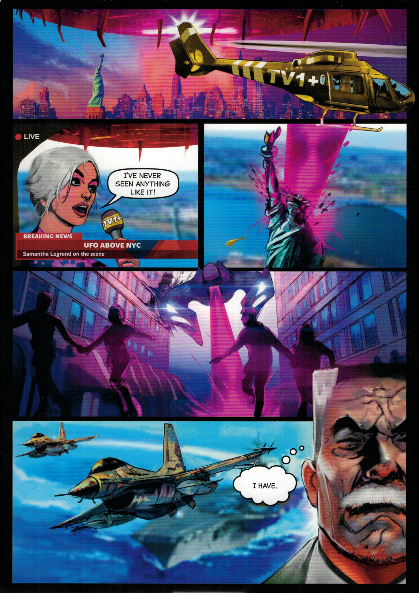
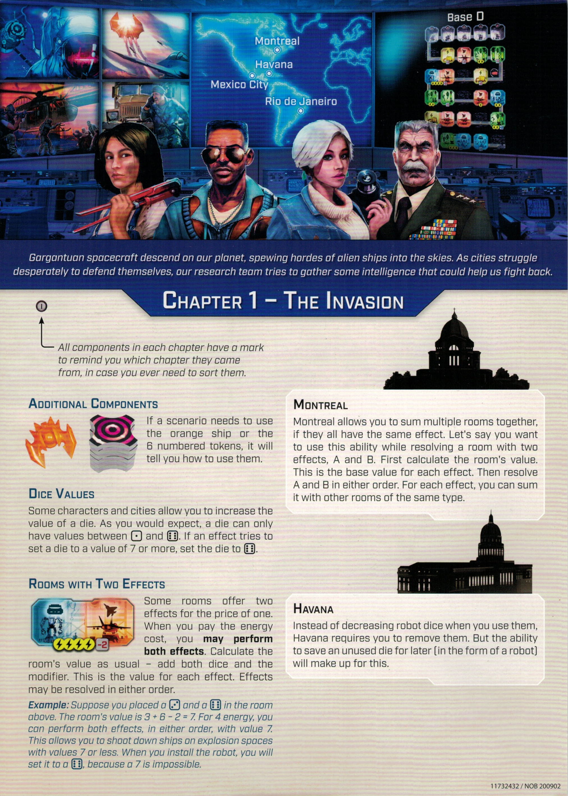
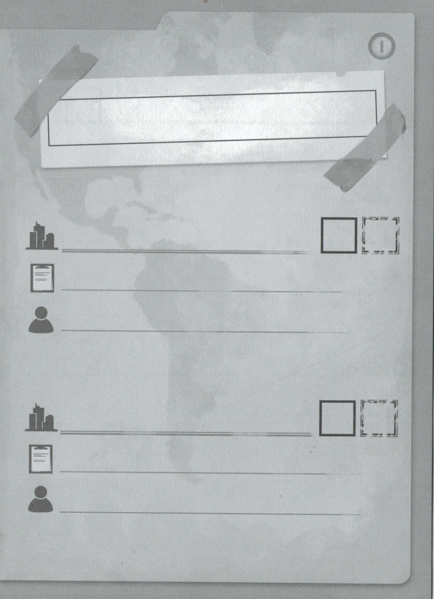
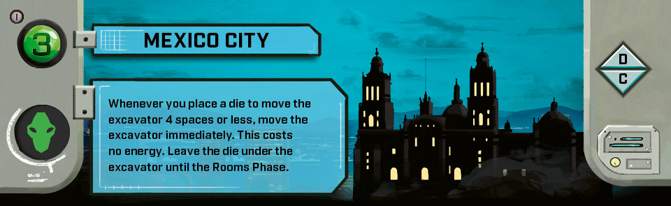
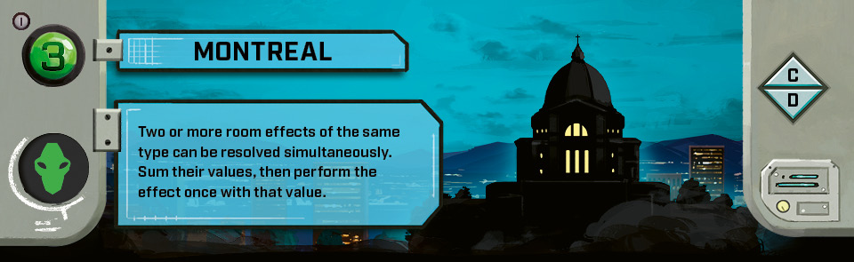
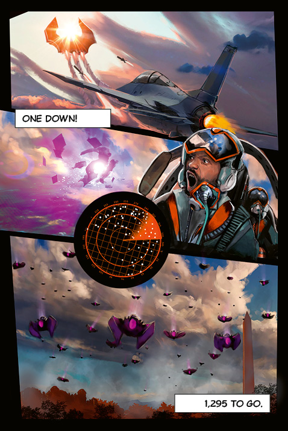
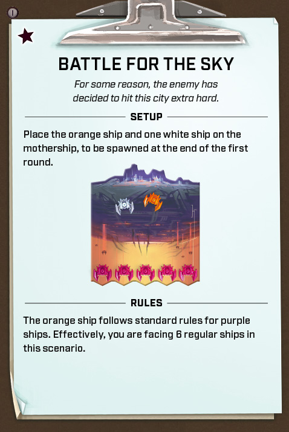
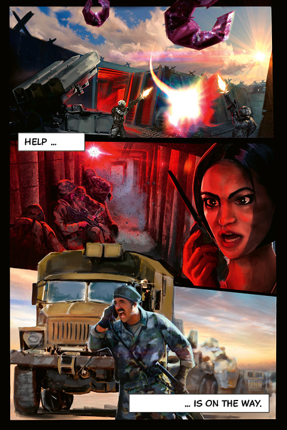
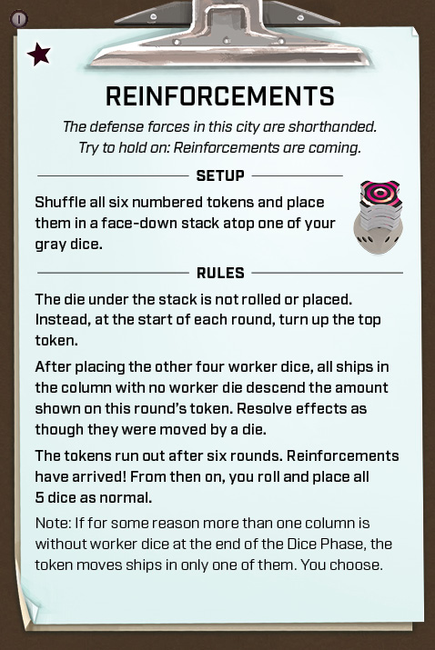
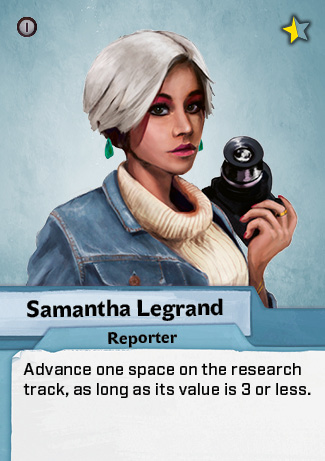
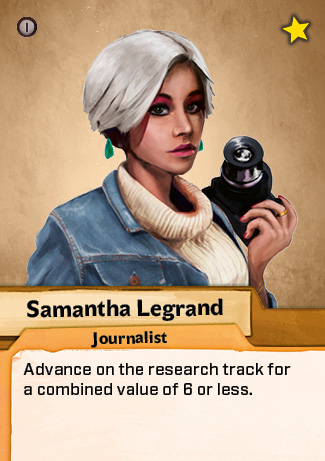
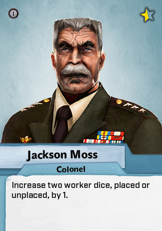
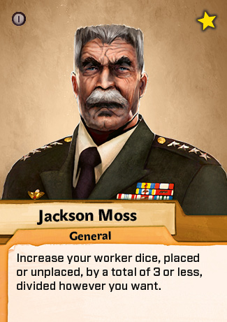